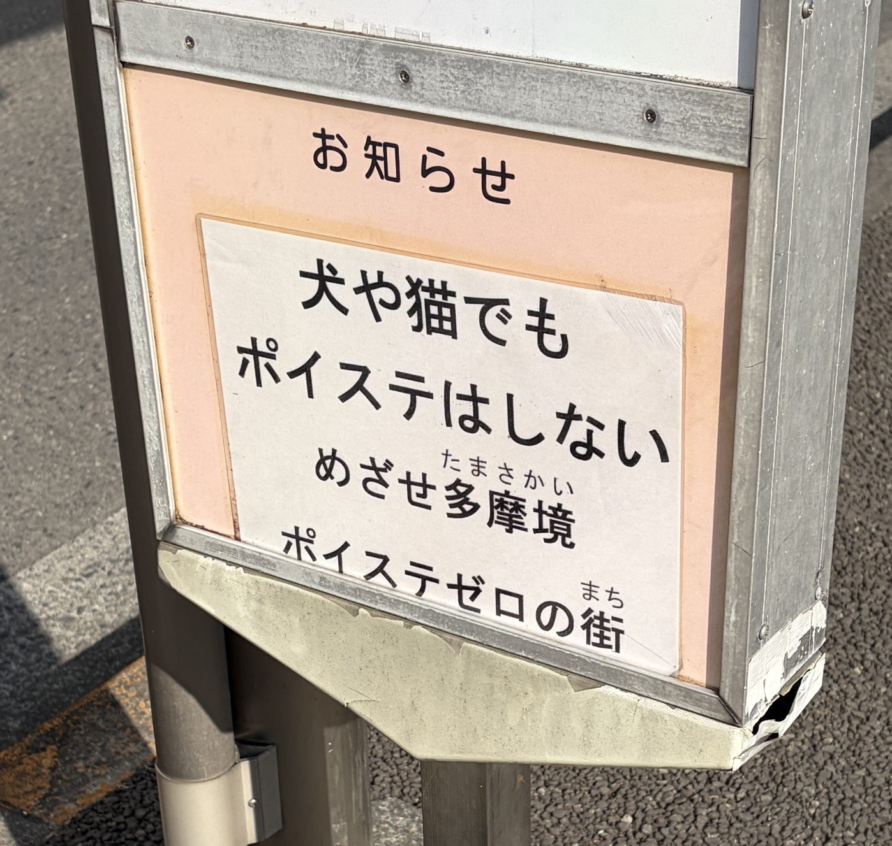

近所のバス停に、犬や猫でも
ポイ捨てはしない
目指せ多摩境
ポイステゼロの街
近所のバス停に貼られていたポスターを撮影し、その写真を見ながら文章を書いている。

「"ポイ捨てゼロ"ではなく"ポイステゼロ"なんだ」と今そう書いたのは、同じ意味でも表記が変わるだけで喚起されるイメージも変化し、そこから"ストロングゼロ"を連想したから、「同じ意味でも表記が変わるだけで喚起されるイメージも変化するんだ！」と実感できたからだった。
"でも"に動物を下位と見なす傲慢さを感じ、"しない"のではなく出来ないだけだと感じた。からポスターから説得力を感じられなかった。
異なる土俵に立つものを、どのように関係付けるかという操作について、最近は考えている。からこんなめんどくさい文章を書いている。